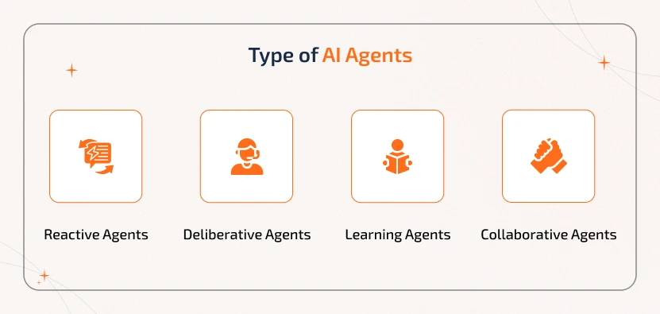
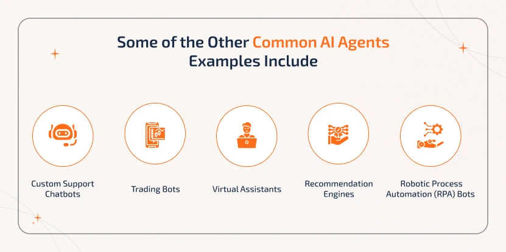
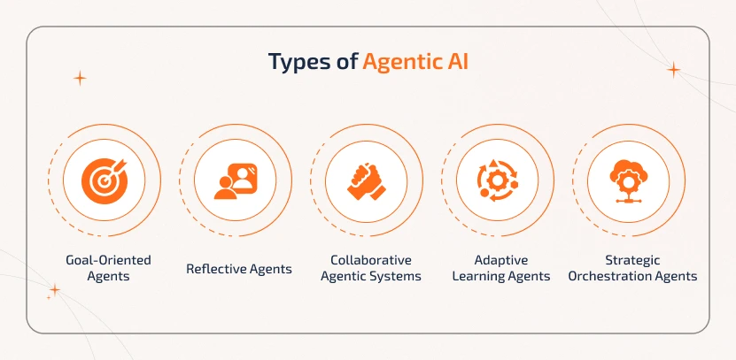
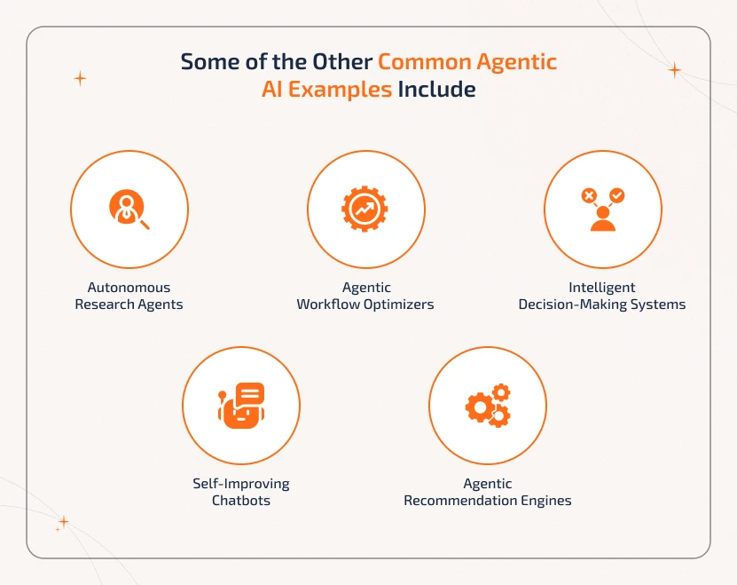
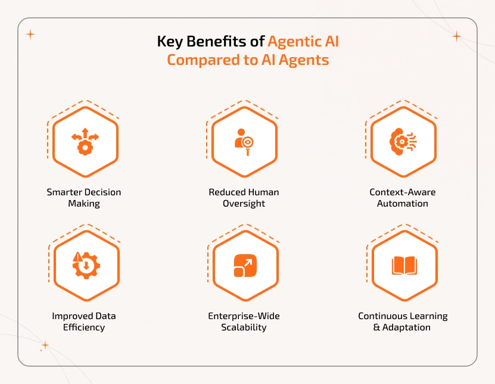
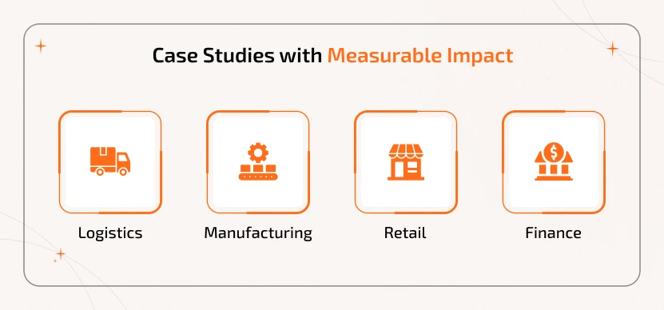
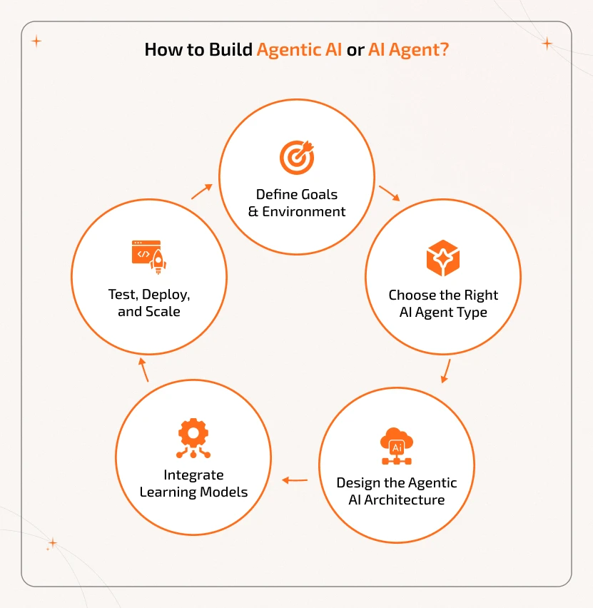
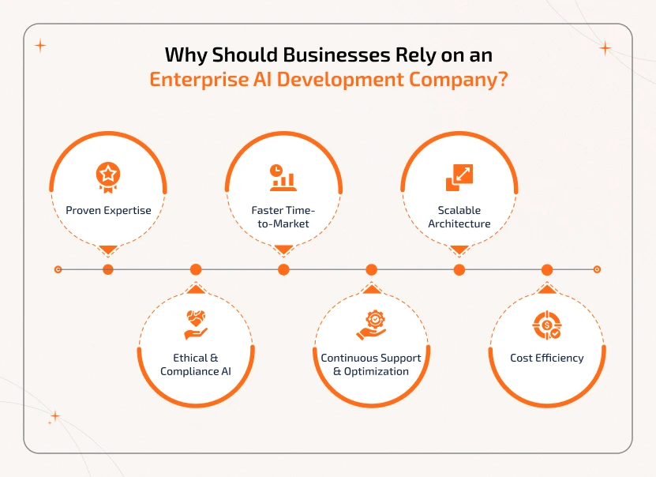

A global survey by Cloudera reports that about 96% of enterprises are planning to expand their use of AI agents in a span of 12 months. This transformation shows that enterprises are gradually shifting towards automation using Artificial Intelligence. This surge also highlights the need to know about the next phase of AI evolution: the distinction between Agentic AI vs AI Agents.
What began as a rule-based AI agent to perform pre-defined tasks has now emerged into the era of Agentic AI, where machines can reason, plan, and act with autonomy much closer to human intelligence.
While organizations are moving towards greater autonomy, it is vital to understand where Agentic AI and AI agents differ. This allows businesses to align their goals with the right technology.
In this blog, we will explore the key differences between Agentic AI and AI agents, their roles in modern enterprises, and how both technologies are shaping the future of intelligent automation.
What are AI Agents - Explained
AI agents are nothing but intelligent software entities that are capable of perceiving their environment, processing information, and taking autonomous actions to achieve defined business objectives.
In simpler terms, they act as a bridge between data, systems, and outcomes. They observe, reason, and execute tasks with minimal human intervention. AI agents form the foundation of intelligent automation and thus enable faster business operations, data-driven decisions, and scalable enterprise applications.
Core Principle:
AI agents follow the principle of the perception-action cycle. i.e., they gather data from their surroundings, process it through algorithms, and respond with goal-driven actions. These agents are used widely in automation workflows, chatbots, recommendation systems, and predictive analytics platforms.
- Perception Layer - Captures environmental or user data.
- Decision Engine - Uses algorithms or rules to choose the best action.
- Action Layer - Executes the defined tasks or outputs.
- Feedback Loop - May include performance metrics, but doesn't include long-term learning.
The section below covers the major types of AI agents and their nature.

1. Reactive Agents
These are AI agents that respond
directly to environmental inputs without checking the memory or past data. Hence
ideal for simple, rule-based tasks like monitoring alerts or triggering
notifications.
- Example: A basic security alarm that triggers when motion is detected.
2. Deliberative Agents
These agents plan and reason before
taking any action. Hence, it is suitable for handling complex and strategic
decisions in supply chain optimization or financial forecasting.
- Example: A chess AI that analyses possible moves before deciding the next one.
3. Learning Agents
As the name suggests, these are agents
that improve their performance over time by analyzing past actions and adapting to
new data. They offer predictive analytics, custom interactions, and self-improving
automation.
- Example: Consider recommendation systems like Netflix or Amazon suggesting shows or products.
4. Collaborative Agents
These are AI agents that
coordinate and work with other agents or humans to achieve shared goals in dynamic
environments. This includes multi-agent logistics or team-based customer support
solutions.
- Example: This includes a customer support chatbot that hands off the queries between bot and human agents to resolve the issue faster.

1. Custom Support Chatbots - They handle the queries in real-time, reducing human workload and improving response times.
2. Trading Bots - Analyze the market data to help users make decisions to buy or sell with minimal latency.
3. Virtual Assistants - These AI agents types ensure to automate task scheduling, reminders, and workflow management for employees.
4. Recommendation Engines - Online platforms like Netflix, Amazon, etc., use agents to suggest content or products based on user behavior.
5. Robotic Process Automation (RPA) Bots - They automate repetitive tasks across finance, HR, and IT operations.
Enterprises highly adopt AI agents to streamline business operations, reduce costs, and gain actionable insights. So, by deploying intelligent agents, organizations can automate complex routine tasks, speed up decision-making, and ensure consistent performance across business processes.
AI agents are found to be working excellently for task-specific automation, and their decisions are usually limited to predefined goals. To tackle these limitations, Agentic AI is used as it offers more autonomy, adaptability, and strategic thinking that helps enterprise intelligence further.
Automate tasks and scale your enterprise with AI Agent solutions.
What is Agentic AI - Explained
Agentic AI is the next evolution of artificial intelligence. These are systems that can handle human-like autonomy, reasoning, and adaptability. Unlike traditional AI agents that work within fixed goals, Agentic AI can handle tasks independently, learn from feedback, and adjust actions accordingly to align with broader organizational goals.
In other words, these systems function more like a human collaborator and thus don't just react to predefined inputs. Rather, they are designed to think strategically and identify new goals, learn continuously, and optimize outcomes in real-time. Hence, it is an ideal choice to handle complex, enterprise-scale applications.
At its core, Agentic AI uses autonomous, goal-driven behavior with advanced learning capabilities. It follows a closed feedback loop of Sense-Act-Learn. Thus, it can obviously manage multiple correlated tasks simultaneously, orchestrate interactions among other AI agents, and continuously improve performance over time.
This continuous feedback cycle allows organizations to build Agentic AI systems that evolve with changing goals, market trends, and data streams. For all these reasons, Agentic AI is a powerful solution for enterprises looking to automate not just the tasks but the entire decision-making processes.
- Cognitive Engine - Integrates reasoning, planning & multi-step decision-making.
- Memory System - Stores episodic & semantic knowledge for contextual continuity.
- Learning Layer - Offers self-improvement based on outcomes and feedback.
- Orchestration Framework - Coordinates multi-agent systems for complex workflows.
This architecture forms the core for next-gen Agentic AI solutions, from autonomous enterprise copilots to adaptive decision systems that evolve with business goals.
The section below outlines the key types of Agentic AI systems and their operational behaviour.

1. Goal-Oriented Agents
These are agentic AI agents that
can set their own goals based on the business needs. They take up multiple pathways
to attain the desired results.
- Example: A project management agent that reallocates the resources automatically to meet the delivery deadlines.
2. Reflective Agents
These types of agents come with
meta-cognition. i.e., they can evaluate their own reasoning and adjust strategies
during the middle of the process when need arises.
- Example: An enterprise AI that revises its marketing campaign based on the real-time performance analytics.
3. Collaborative Agentic Systems
They are multi-agent
systems and can effortlessly communicate, negotiate, and cooperate with other agents
or humans to achieve desired outcomes.
- Example: Multi-agent orchestration used in logistics optimization across supply chains.
4. Adaptive Learning Agents
These agents learn from success
and failure continuously to refine their behavior to adapt to changing contexts and
data inputs.
- Example: Customer service agents who support refining tone, response time, and accuracy with each user interaction.
5. Strategic Orchestration Agents
They are capable of
managing and coordinating multiple subsystems or AI agents to achieve
enterprise-wide goals through strategic reasoning and execution.
- Example: An AI director that orchestrates sales, inventory, and marketing systems to help maintain businesses with continuity.

1. Autonomous Research Agents - They explore data, generate hypotheses, and deliver actionable insights without manual input.
2. Agentic Workflow Optimizers - They can manage internal workflows by reprioritizing tasks and resources in real-time.
3. Intelligent Decision-Making Systems - These agents will evaluate the business scenarios and propose optimal strategies with data-backed reasoning.
4. Self-Improving Chatbots - They evolve with their responses, tone, and knowledge base from each conversation.
5. Agentic Recommendation Engines - These agents can predict user intent and create personalized experiences across e-commerce and streaming platforms.
Unlike AI agents, Agentic AI goes beyond automation. It provides strategic autonomy to enterprise systems. Unlike traditional AI agents that follow pre-defined rules, Agentic AI understands the goals, learns from feedback, and makes decisions that align with your business results.
By integrating Agentic AI solutions, businesses can gain an advantage to optimize operations, innovate faster, and respond intelligently to changing market demands.
The key business advantages include:
1. Higher Autonomy - It reduces manual oversight and boosts decision speed.
2. Context-Aware Intelligence - Agentic AI understands the complex business goals and adapts actions accordingly.
3. Scalable Operations - It supports large-scale, interconnected AI agent ecosystems.
4. Continuous Learning - It learns from new data to improve accuracy and efficiency.
5. Strategic Alignment- Agentic AI ensures to keep AI-driven actions aligned with enterprise objectives.
Transform your enterprise with Agentic AI solutions that can think, learn, and act autonomously to optimize operations and strategic decision-making.
Agentic AI Vs AI Agents - A Complete Comparison
As enterprises adapt to intelligent automation, getting to know the core difference between Agentic AI vs AI Agents for enterprise AI development becomes essential. While both technologies are key parts of AI evolution, their architecture, autonomy, and adaptability show how effectively they can deal with complex business goals.
Here goes the side-by-side comparison:
| Features | AI Agents | Agentic AI |
|---|---|---|
| Autonomy | Limited to perform task-based actions & specific rule sets. | Self-directed, adaptive systems and is capable of independent planning and reasoning. |
| Learning Capability | Often pre-programmed with minimal adaptability. | Dynamic and continuous learning through contextual understanding and feedback loops. |
| Decision-Making | Goal-oriented. But dependent on predefined parameters. | Context-aware, reflective, and supports making ethical, strategic decisions. |
| Architecture | Modular structure designed for discrete operations. | Self-organizing framework that enables multi-agent collaboration and end-to-end autonomy. |
| Interaction Type | Typically, single-agent operations respond to user input. | Multi-agent orchestration and collaboration for complex workflows. |
| Human Involvement | Needs supervision for most tasks. | Minimal. They operate with human oversight only for governance or ethical boundaries. |
| Use Cases | Customer chatbots, task automation bots, and workflow assistants. | Digital employees, autonomous decision-making systems, and enterprise process optimizers. |
Technical Comparison - How Agentic AI Differs from AI Agents
Upon comparing Agentic AI vs AI Agents for enterprise AI development, it is clear that the biggest differences appear in scope, autonomy, learning, and orchestration. AI agents follow predefined rules, whereas Agentic AI systems think, adapt, and collaborate to achieve broader objectives without constant human supervision.
1. Scope & Autonomy
AI Agents will operate within narrow, task-specific scopes. They are capable of handling individual actions like responding to a customer query, fetching data, or triggering automation. Usually, their autonomy is limited to what developers predefine.
Agentic AI, on the other hand, functions with goal-oriented autonomy. i.e., rather than waiting for commands, it sets sub-goals, plans multiple pathways, and finds the best course of action. Agentic AI can make independent adjustments with respect to the changing data and thus offers self-directed decision-making across an enterprise.
Example:
- An AI agent supports generating a marketing email, but an Agentic AI system designs, tests, and refines the entire campaign based on performance metrics, even without human input.
2. Decision-Making & Planning
Traditional AI agents are rule-based or rely on tool-calling logic and react to triggers or commands. Their reasoning capability stops as soon as they complete the task.
Agentic AI uses multi-step reasoning and planning to analyze multiple variables right before executing. It checks the context, simulated outcomes, and can re-prioritize tasks to support long-term goals. This makes it suitable for performing autonomous business planning, optimization, and strategy execution.
Example:
- A logistics AI agent schedules delivery while an Agentic AI system dynamically reroutes shipments during plan change to reduce cost and delay.
3. Memory, Context & Learning
AI agents don't come with persistent memory. i.e., they can perform tasks alone with no long-term content retention.
Agentic AI introduces episodic and semantic memory. Thus, they learn from past experiences and apply the insights to future actions. With this, a loop of reasoning, learning, and performance optimization will be created.
Example:
- A helpdesk AI agent answers customer queries while an Agentic AI model remembers user behavior, predicts needs, and proactively offers solutions for later cases.
4. Inter-Agent Communication & Orchestration
Most often, AI agents work independently and complete the given tasks. However, many AI agent tools lack a collaborative problem-solving framework.
Agentic AI systems, on the other hand, work through inter-agent communication and orchestration. Multiple AI agents communicate under a shared cognitive framework. They exchange information and handle tasks together to achieve a unified enterprise goal. You will find this more similar to human teamwork work where individual experts work on achieving a shared goal.
Example:
- In an enterprise workflow, standalone AI agents handle sales forecasts, customer support, inventory handling, etc., separately. Under an Agentic AI framework, these agents collaborate and work. i.e., the sales agent alerts the finance agent about the upcoming revenue changes while the logistics agents adjust the supply planning automatically in real-time.
5. Resource Requirements & Complexity
AI agents are known to be lightweight, low-maintenance, and easy to deploy for repeated automation. Their limited autonomy makes them less effective for large-scale decision-making in the business ecosystem.
Agentic AI needs greater computational resources, data infrastructure, and governance due to its reasoning depth, memory management, and orchestration layers. Besides, the long-term ROI is higher because Agentic AI delivers scalable, adaptive intelligence.
Example:
- Traditional AI agents automate invoice processing, while an Agentic AI platform manages the entire financial cycle by predicting the cash flow, anomalies, and optimizing payments autonomously.
Key Benefits of Agentic AI Compared to AI Agents
Choosing Agentic AI over AI agents helps organizations move further beyond basic automation. This includes adaptive, proactive, and scalable intelligent systems. Agentic AI evolves continuously by analyzing context, learning from outcomes, and autonomously refining strategies.

Upon understanding the benefits of Agentic AI compared to AI agents, enterprises can get greater efficiency, resilience, and innovation across operations.
1. Smarter Decision-Making
Agentic AI can analyze multiple
data sources, simulate outputs, and make contextually aware decisions that align
with business objectives.
2. Reduced Human Oversight
With goal-oriented autonomy,
Agentic AI systems help manage repetitive work efficiently and thus free up teams to
focus more on strategy and innovation.
3. Context-Aware Automation
Agentic AI systems are capable
of understanding the intent, adjusting the actions based on live data, and
coordinating tasks seamlessly across departments.
4. Improved Data Efficiency
These systems can efficiently
optimize the way data is utilized. i.e., it identifies relevant insights faster and
minimizes redundancy across your enterprise systems.
5. Enterprise-Wide Scalability
Agentic AI can scale across
different departments and thus is unlike the AI agents. It can integrate with your
existing business CRMs, ERPs, and cloud ecosystems to create unified intelligence.
Continuous Learning & Adaptation
Through dynamic feedback loops, Agentic AI improves its
performance over time. This supports enterprises to stay competitive in
fast-changing markets.
Harness Agentic AI solutions to achieve far better outcomes than traditional AI agents.
Real-World Enterprise Use Cases - AI Agents Vs Agentic AI
In order to understand the practical impacts of AI agents and agentic AI, it is important to know how the technologies work across different industries. This section is all about the industry-specific applications.
| Industry | AI Agents Use Case | Agentic AI Use Case |
|---|---|---|
| Finance | Trading bots, fraud detection systems. | Autonomous risk assessment, portfolio optimization. |
| Retail / eCommerce | Recommendation engines, chatbots. | Adaptive marketing campaigns, dynamic inventory allocation. |
| Healthcare | Patient support chatbots. | Predictive diagnostics, automated treatment planning. |
| Manufacturing | RPA bots for repetitive tasks. | Predictive maintenance, intelligent supply chain orchestration. |
| Logistics | Delivery scheduling agents. | Multi-agent route optimization, adaptive logistics network. |
Case Studies with Measurable Impact
Check out the real-world examples where AI Agents and Agentic AI solutions have improved business efficiency and delivered measurable business outcomes.

1. Logistics
With AI-driven delivery optimization, DHL has
achieved a 30% improvement in on-time delivery rates and 20% savings in fuel and
route optimization.
- Source : Creole Studios
2. Manufacturing
With AI-driven predictive maintenance,
it is found that AI has reduced downtime by 86%, cut maintenance costs by 74% and
improved equipment reliability by 91%.
- Source : Agentic Dream
3. Retail
Adaptive AI agents monitored real-time market
signals to optimize promotional strategies. This has increased responsiveness to
market trends and resulted in higher sales and engagement.
- Source : X Cube LABS
4. Finance
In financial sectors, autonomous AI systems were
used for risk assessment and portfolio adjustments. This resulted in faster
adaptation to market changes and improved investment returns.
- Source : Cloud Factory
Key Considerations Before You Start Building AI Agents or Agentic AI
Whether you are about to build an AI agent or develop Agentic AI, it is essential to check for readiness and resources. By planning properly, implementation becomes easier, and you will get the advantages like better performance and long-term scalability.
Points to Consider:
1. Assess Data Infrastructure
Check if your organization
has real-time data pipelines that are reliable. High-quality and timely data ensures
that AI agents and Agentic systems to make accurate decisions.
2. Evaluate Team Expertise
It is important for your team to
have experience with AI app development company best practices. This includes
machine learning, AI architecture, and integration workflows. Skilled team ensures
your project is technically strong.
3. Plan for Conversational AI
If needed, you shall
integrate chatbots or virtual assistants into your existing system. You shall look
for chatbot development services for effortless user interactions and integration.
4. Compliance
Be assured to review ethical guidelines,
regulatory compliance, and security policies if you don't want biased results. It is
vital for autonomous AI systems to have clear monitoring frameworks.
5. Scalable Infrastructure
You should
choose flexible cloud or hybrid setups so the AI systems will evolve with your
enterprise needs. This supports more complex workflows and dealing with higher data
volumes.
How to Build Agentic AI or AI Agent?
Building an AI Agent or a full-scale Agentic AI system is all about the process of using the right technology, data pipelines, and architectural intelligence. The process focuses on creating systems that can sense, reason, and act, while adapting to real-world changes over time.
No matter if your goal is to build AI agents for automation or develop Agentic AI solutions for enterprise decision-making, the core foundation remains the same. i.e., clarity, scalability, and continuous learning.

Step 1: Define Goals and Environment
Start by identifying
what you want the AI system to achieve. Whether it is going to automate customer
support, optimize operations, or provide autonomous decision-making. Keep in mind
that a clearly defined environment provides realistic goal setting and measurable
outcomes.
Step 2: Choose the Right AI Agent Type
Now, start to decide
between reactive, deliberative, learning, or collaborative agents based on your
business needs. For complex adaptive behavior, you shall choose Agentic AI that can
plan, reason, and self-optimize.
Step 3: Design the Agentic AI Architecture
You shall choose
modular, cloud-ready frameworks to integrate reasoning loops, memory, and context
awareness. This architectural setup ensures businesses with develop scalable and
adaptive AI agent development solutions.
Step 4: Integrate Learning Models
Proceed to embed machine
learning or reinforcement learning models to get support for continuous improvement.
These models help the AI refine decisions and adapt to new data over time.
Step 5: Test, Deploy, and Scale
It is better to pilot your
AI agents in controlled environments instead of choosing large-scale rollout. When
you collect feedback, refine algorithms, and gradually expand across departments or
use cases, you will be getting maximum ROI.
Risks, Challenges, & Things to Avoid
Although both AI agents and Agentic AI offer significant business benefits, both technologies come with unique risks and challenges. Getting to know these distinctions ensures safer, transparent, and outcome-driven deployments.
1. Limited Adaptability – There are possibilities for the rule-based AI agents to fail when unexpected inputs occur.
2. Data Quality Dependence – Poor or incomplete data can reduce accuracy.
3. Integration Complexity – Linking multiple systems or workflows becomes challenging.
4. Partial Automation Risks – Over dependency on automated tasks without human checks can lead to errors.
1. Overdependence on Automation – Fully autonomous systems can even make self-directed decisions that at times mismatch with business goals if human oversight is insufficient.
2. Data Privacy & Security Risks – Agentic AI handles massive, sensitive datasets. This in turn, requires strict encryption, anonymization, and compliance controls.
3. Ethical Implications – There is a possibility for the autonomous reasoning to bring in bias, fairness, or accountability issues; robust governance is critical.
4. Lack of Human Oversight – Continuous monitoring and explainable agentic AI tools are required to ensure the decisions align with enterprise objectives.
It is better to avoid using incomplete or biased training data.
- Avoid skipping explainability or monitoring layers.
- Do not overengineer or launch systems without pilots.
- Should not bypass the governance, compliance, or ethical considerations.
- Considering future business evolution, it is better to avoid underestimating scaling requirements.
Why Should Businesses Rely on an Enterprise AI Development Company?
Building AI agents or Agentic AI systems is complex, resource-intensive, and requires technical knowledge. Partnering with an experienced AI agent development company or Agentic AI development company helps enterprises get the maximum value with minimal risks.

Key Reasons to Rely on Experts:
1. Proven Expertise
AI development companies have better experience in designing, deploying, and scaling AI agent solutions across industries.
2. Faster Time-to-Market
They use the latest frameworks, architectures and follow industry best practices to speed up deployment and ROI.
3. Scalable Architecture
Experts develop Agentic AI architecture in such a way that it grows with your enterprise and helps to integrate with multiple systems easily.
4. Ethical & Compliance AI
Teaming up with professionals ensures your AI system is developed in accordance with privacy, security, and governance standards.
5. Continuous Support & Optimization
A trusted AI development agency will cover services post-deployment. This covers monitoring, updates, and optimization that help companies maintain better performance over time.
6. Cost Efficiency
Businesses can avoid dealing with costly trial-and-error or hiring gaps with the right team. They help with outsourcing, which in turn reduces long-term expenses.
Sparkout is a leading AI Agent Development Company that build scalable AI agents and Agentic AI solutions that drive measurable results.
Future of Agentic AI Vs AI Agent
With the increase in businesses adopting intelligent automation, the future of AI lies in systems that not just execute tasks but also think, decide, and act autonomously. While AI Agents and Agentic AI play a major role in the future, we could find their scope and impact differs largely.
AI agents will continue to optimize specific tasks like customer support, workflow automation, predictive analytics, etc. Their role in enterprise AI development will be about improving efficiency, reducing manual effort, and enabling faster decision-making in real-time.
Whereas Agentic AI architecture is the next evolution in enterprise intelligence. They use autonomy, learning, and reasoning to allow businesses to deploy AI that can make self-direct actions, handle multiple sub-systems, and align with strategic goals.
The future is all about a hybrid enterprise ecosystem where AI Agents handle operational tasks and Agentic AI drives strategic intelligence. With both technologies, enterprises can act faster, smarter, and more autonomously.